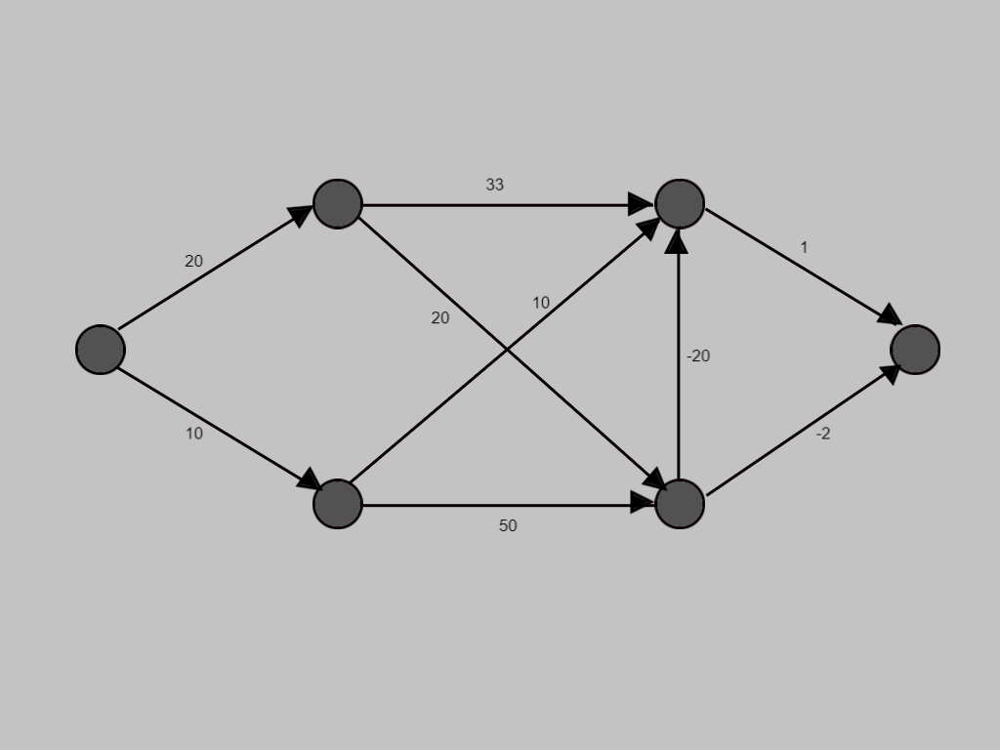
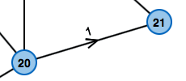

This is the graph for which we are going to visualise the process of the Bellman-Ford algorithm step wise.
Edges with negative weights in graph.
In many applications one wants to obtain the shortest path from a to b. Depending on the context, the length of the path does not necessarily have to be the length in meter: One can as well look at the cost of a path – both if we have to pay for using it – or if we receive some.
In general we speak of cost. Therefore one assigns cost to each part of the path – also called "edge".
Dijkstra's Algorithm computes shortest – or cheapest paths, if all cost are positive numbers. However, if one allows negative numbers, the algorithm will fail.
The Bellman-Ford Algorithm by contrast can also deal with negative cost.
These can for example occur when a taxi driver receives more money for a tour than he spends on fuel. If he does not transport somebody, his cost are positive.
This edge is a short-cut and can taverse the node in 21.
Therefore the original cost is replaced by the minimum one i.e. 21.
The Bellman-Ford Algorithm computes the cost of the cheapest paths from a starting node to all other nodes in the graph.
The algorithm proceeds in an interactive manner, by beginning with the highest estimate of the cost and then improving it until the cminimum value is found.
The first estimate is:
Afterwards, the algorithm checks every edge for the following condition: Are the cost of the source of the edge plus the cost for using the edge smaller than the cost of the edge's target?
If this is the case, we have found a short-cut: It is more profitable to use the edge which was just checked, than using the path used so far. Therefore the cost of the edge's target get updated: They are set to the cost of the source plus the cost for using the edge (compare example on the right).
Looking at all edges of the graph and updating the cost of the nodes. Unfortunately, it is not sufficient to look at all edges only once. After the first phase, the cost of all nodes for which the shortest path only uses one edge have been calculated correctly. After two phases all paths that use at most two edges have been computed correctly, and so on.
How many phases ware necessary? To answer this question, the observation that a shortest path has to use less edges than there are nodes in the graph. Thus, we need at most one phase less than the number of nodes in the graph. A shortest path that uses more edges than the number of nodes would visit some node twice and thus build a circle.
Each time when updating the cost of some node, the algorithm saves the edge that was used for the update as the predecessor of the node.
At the end of the algorithm, the shortest path to each node can be constructed by going backwards using the predecessor edges until the starting node is reached.
This is the graph for which we are going to visualise the process of the Bellman-Ford algorithm step wise.
BEGIN
Selecting the starting node of graph and denoting it by "s".
Cost for all nodes set as infinite, until they are visited and have been assigned value.
The edge being visited is denoted by a red arrow.
After evaluating, if the cost is minimum till that point of consideration, the edge is denoted in green.
The cost for traversing this edge is 20, hence 20 is assigned to the corresponding node.
The next node is being visited.
Similarly, the shortest path for each node is being calculated.
Similarly, the shortest path for each node is being calculated.
Similarly, the shortest path for each node is being calculated.
Similarly, the shortest path for each node is being calculated.
Similarly, we will calculate the shortest paths for visiting all nodes from s.
Now with the red path we are evaluating whether any improvement is possible in the cost.
Since there was improvement in cost for the node, the value at the node has been replaced by the minimum of both the costs.
Now with the red path we are evaluating whether any improvement is possible in the cost.
Now with the red path we are evaluating whether any improvement is possible in the cost.
Up to now, all shortest paths have been calculated that use at most 2 Edges . Now we will calculate using at most 3 edges.
Now with the red path we are evaluating whether any improvement is possible in the cost.
Now with the red path we are evaluating whether any improvement is possible in the cost.
Since there was improvement in cost for the node, the value at the node has been replaced by the minimum of both the costs.
Now with the red path we are evaluating whether any improvement is possible in the cost.
Similarly, with the red path we will continue to evaluate the rest of the graph for anu possible improvement in cost.
The green edges denote the shortest/least cost paths for traversing the nodes.
END
BEGIN
d(v[1]) ← 0
FOR j = 2,..,n DO
d(v[j]) ← ∞
FOR i = 1,..,(|V|-1) DO
FOR ALL (u,v) in E DO
d(v) ← min(d(v), d(u)+l(u,v))
FOR ALL (u,v) in E DO
IF d(v) > d(u) + l(u,v) DO
Message: "Negative Circle"
END